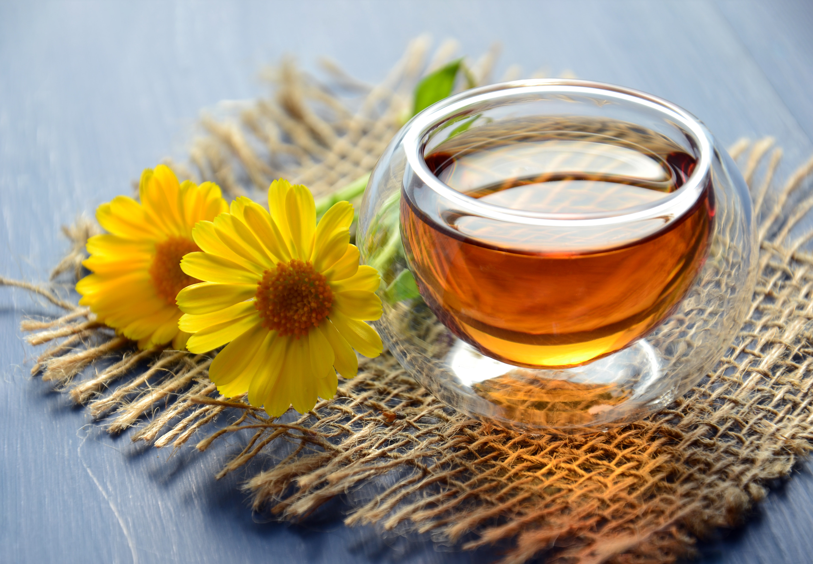

Još od najstarijih vremena čevek je koristio med u očuvanju svog zdravlja
Med je najstariji zaslađivač u ljudskoj ishrani. On je prirodna alternativa šećeru, koja će pored šećera, organizmu pružiti i enzime, antioksidanse, gotovo sve vitamine i minerale.
Zbog svog antibakterijskog, antiseptičkog, antivirusnog i antimikotičkog dejstva, med jača imunitet organizma.
Med u sebi sadrži skoro sve sastojke koji su potrebni ljudskom organizmu. Ipak, zbog velike količine šećera u sebi, treba ga umereno konzumirati. Preporuka je uzimati 3-4 kafene kašičice (30g) meda dnevno.
Med je jedna od najvrednijih namirnicia koja je svoju primenu našla u tradicionalnoj medicini

Med se vekovima koristio u narodnoj medicini, dok je danas lečenje pčelinjim proizvodima, tzv. apiterapija medicinski priznata metoda.
Postoji mnogo različitih vrsta meda i svi se oni razlikuju po svojoj boji, mirisu i ukusu, ali i po svojim lekovitim svojstvima. Najlekovitijim se smatra livadski med iz razloga što su za njegovu proizvodnju pčele koristile nektar različitih vrsta biljaka.
U medu se šećer nalazi u svojim prostim, lako usvojivim oblicima (u obliku glukoze i fruktoze), čime se brzo oslobađa energija neophodna za rad srca i drugih mišića. Zbog ovoga čak i mala količina meda omogućava brz oporavak u slučaju umora i iscrpljenosti, pritom deluje umirujuće na organizam i ne nadražuje sluzokožu organa za varenje.
Med nam daju pčele, a kako one to čine?
Da bi proizvele 1kg meda, pčele treba u košnicu da unesu oko 3kg nektara. Sa jednog cveta pčela uzme u proseku 0,02mg nektara.
Za 1kg meda pčele traba da posete više od 5 miliona cvetova i da prelete oko 50 hiljada kilometara, što je duže od obima Zemljine kugle.